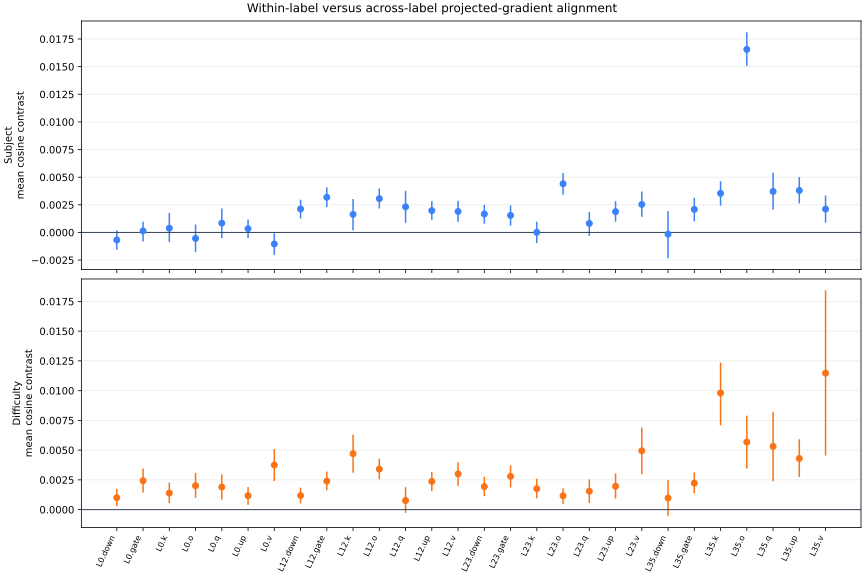
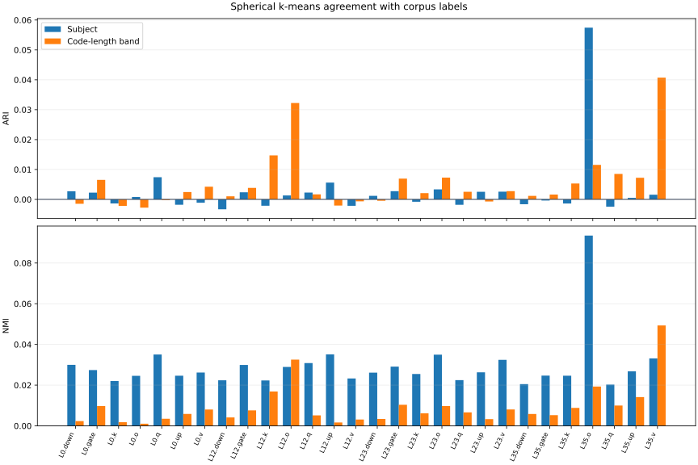

Investigating the Emergence of Specialized Adapters for Text-to-Manim Generation
An exploratory study of whether subject labels and a code-length difficulty proxy explain the gradient structure of a shared LoRA adapter.
I began this project with a simple hypothesis: prompts from different mathematical subjects, or prompts that produce more complex Manim programs, might benefit from separate LoRA adapters. I first trained three fixed adapters and routed examples by a code-length-based difficulty label. I then asked a stricter question: does the gradient geometry of one shared adapter reveal the same separation without being told where the boundaries are?
Exact held-out gradients showed that conflict was common, but conflict alone did not identify coherent groups. A second analysis joined projected gradients from 481 training examples to subject and difficulty labels across 28 LoRA modules. Within-label cosine effects were small, although many were detectable under shuffled-label tests. Unsupervised agreement remained weak: the best adjusted Rand index was 0.057 for subject and 0.041 for the difficulty proxy. Under this checkpoint and sample, the evidence did not support clean subject- or difficulty-specific adapter boundaries.
1. Introduction
Text-to-Manim generation sits in an unusual space. The model has to translate a lesson request into a Python program, and the program has to express both mathematical content and a visual sequence. While working on this problem, I read D-MoLE, a method that grows and routes LoRA experts layer by layer for continual multimodal instruction tuning.1 Its central idea—that different tasks may need different adaptation capacity—suggested a smaller question for this project.
The dataset covers many mathematical subjects. I suspected that algebraic, geometric, probabilistic, and other prompts could push the adapter in different directions. If those differences were stable, a training regime might eventually allocate specialized adapters instead of forcing all examples through one update space.
I use emergence in the title to describe that hypothesis. This experiment did not implement an online spawning algorithm. It tested whether the observed gradients contained a credible signal from which such groups could emerge. The distinction matters because three earlier specialist adapters were fixed in advance and selected by an oracle label. They demonstrate a routed setup, but they are not evidence of learned specialization.
3. Methodology
Dataset and labels
The prepared Bespoke-Manim corpus contains 995 valid prompt–program pairs from the pinned dataset revision.4 It spans 23 subject labels. The earlier routing experiment divided examples into three nearly equal bands—336 foundational, 332 intermediate, and 327 advanced—using tertiles of target Python line count.
Those names are convenient labels, not validated measures of mathematical difficulty. Longer target code may reflect more objects, comments, or animation steps. Throughout the article I call this variable the code-length difficulty proxy.
Fixed specialists and the shared probe
The first setup trained three rank-16 LoRA checkpoints, one for each code-length band, and used the known band as an oracle router. The checkpoints are distinct and cover the same seven projection types. Their base-model identity and evaluation contract differ from the later shared-adapter study, so I do not compare their losses or claim that one design performed better.
The shared-adapter study then measured per-example gradients at checkpoint step 1,790. Two recovered views serve different purposes:
- Exact held-out gradients: exact LoRA A/B vectors for 100 validation examples, 19 represented subjects, 36 layers, and seven projection types—252 modules in total. Only aggregated cosine summaries were recovered.
- Projected training signatures: 256-dimensional signatures for 481 training examples from eight subjects, covering seven projection types at layers 0, 12, 23, and 35—28 modules. For each module, the implementation concatenates the LoRA parameter gradients conceptually, then accumulates their coordinates into deterministic signed-hash buckets. These per-example signatures support the label-association and clustering tests.
Tests of label structure
For each projected module, I normalized every nonzero signature and computed pairwise cosine similarity. I compared the mean similarity of pairs sharing a label with pairs crossing labels. I also computed a per-record contrast: the record's mean cosine to examples with the same label minus its mean cosine to examples with a different label.
Uncertainty comes from 2,000 resamples of the record contrasts. Because records share pairwise cosine terms, these intervals are descriptive. For a null comparison, I shuffled labels 2,000 times while preserving group sizes. Benjamini–Hochberg and Bonferroni adjustments were applied separately to the 28 subject tests and the 28 difficulty-proxy tests.5
Finally, spherical k-means clustered each module with the number of clusters set to the number of observed labels: eight for subject and three for the proxy. Ten initializations were tried. Adjusted Rand index (ARI) and normalized mutual information (NMI) measured agreement with the labels; shuffled labels supplied a chance baseline. ARI adjusts pair agreement for chance.6
4. Experiments
| Evidence view | Examples | Labels represented | Modules | Role |
|---|---|---|---|---|
| Exact held-out LoRA gradients | 100 validation | 19 subjects | 252 | Measure conflict prevalence |
| Projected signatures | 481 training | 8 subjects; 3 proxy bands | 28 | Test label association and clustering |
| Placement ablation | 895 train / 100 validation | No routed labels | 4 placements per arm | Check whether placement can matter |
The held-out exact analysis contains 4,665 unique cross-subject example pairs per module. The projected analysis contains 115,440 unique pairs per module. For subjects, 14,621 are within-label and 100,819 cross-label. For the code-length proxy, 38,356 are within-band and 77,084 cross-band.
A short placement ablation trained four equal-size adapter configurations for 64 steps with seed 42 and 466,944 trainable parameters per arm. It compared modules selected from the gradient probe with two random placements and one low-energy placement. This experiment evaluated validation loss only; it did not generate videos.
5. Results
Conflict was real, but conflict was not a partition
Across the 252 exact-gradient modules, the share of cross-subject pairs with negative cosine ranged from 13.9% to 50.8% (4,665 unique cross-subject pairs per module). After gradients were aggregated by layer, the range was 15.6% to 48.8% across 36 layers. This rules out a simple story in which all subjects update the shared adapter in the same direction. It still leaves open whether the opposition is stable enough to define specialists.
Label effects were detectable and small
For subject labels, the median per-record cosine contrast across 28 modules was 0.0019, with a range from −0.0010 to 0.0166. Seventeen of 28 modules had a Benjamini–Hochberg q-value at or below 0.05, and 11 of 28 survived Bonferroni correction. The standardized pair-mean differences had a median of 0.025 and a maximum of 0.174.
The code-length proxy produced a median contrast of 0.0023 and a range from 0.0008 to 0.0115. Twenty-six of 28 modules met the q ≤ 0.05 threshold, and 18 of 28 survived Bonferroni correction. Its standardized differences had a median of 0.033 and a maximum of 0.085.
Statistical detectability therefore does not settle the routing question. With 481 examples and more than 115,000 pairs per module, a small shift can be measured consistently. The practical question is whether it produces separable groups.

Unsupervised clusters barely matched the labels
Subject ARI ranged from −0.003 to 0.057; subject NMI ranged from 0.020 to 0.093. For the code-length proxy, ARI ranged from −0.003 to 0.041 and NMI from 0.001 to 0.049. Some of the best values exceeded shuffled-label baselines, but their absolute agreement remained low. A router built from these partitions would inherit substantial mixing between groups.

Placement mattered in one short run
| 64-step placement arm | Validation loss | Replicates | Generation evaluated? |
|---|---|---|---|
| Gradient-probe-selected | 0.6455 | 1 | No |
| Random 1 | 0.6696 | 1 | No |
| Random 2 | 0.7069 | 1 | No |
| Low energy | 0.8319 | 1 | No |
The selected placement reached the lowest validation loss in this four-arm comparison. One seed and 64 updates are not enough to establish a general placement rule. The result suggests that where adaptation capacity is placed may deserve further study even when subject-based routing is weak.
6. Discussion
The projected gradient signatures contain subject- and code-length-associated structure, but the structure does not form clean groups under the evaluated checkpoint. This evidence did not justify spawning one adapter per subject or per proxy band.
The initial hypothesis treated dataset labels as plausible task boundaries. The measurements suggest that they are weak routing targets. Subject labels describe mathematical content, while the generation task remains largely the same: write a runnable visual program. The code-length proxy is closer to output structure, which may explain why it appears consistently in cosine tests, but its clusters still overlap heavily.
This also changes how I interpret gradient conflict. Negative cosine is useful as a warning that examples compete locally. A spawning rule would need stronger evidence: persistence over checkpoints, agreement across seeds, a stable partition, and a downstream gain from routing. None of those follows from conflict frequency alone.
7. Limitations
The projected stream covers 481 of 895 training examples and only eight of the corpus's 23 subject labels. The exact held-out view covers 19 subjects, but some subjects have one example and the recovered file contains aggregate statistics rather than raw vectors. Exact and projected results therefore answer related but different questions.
The code-length bands are a proxy derived from the target answer. They are unavailable for a new prompt unless another system predicts them, and they may capture formatting or animation verbosity. The fixed specialist checkpoints were trained with a different base-model identity and evaluation contract, which prevents a controlled comparison with the shared adapter.
The clustering study uses one checkpoint and one projected signature seed. I did not compare pairwise cosines or cluster assignments from the 256-dimensional signed-hash signatures with their exact-vector equivalents, so the study does not measure how much structure the projection preserved. The recovered exact artifact is aggregated and cannot supply that check. Layer 35 received attention after exploratory visualization. The placement ablation has one seed, 64 steps, and no generation evaluation. The experiments do not measure whether any proposed router improves rendered-video quality.
8. Conclusion
D-MoLE prompted a useful question for text-to-Manim training: could adapter groups be discovered from the training dynamics instead of declared in advance? In this run, subject and code-length labels left small traces in the gradient geometry, while unsupervised partitions remained mixed. The recovered evidence did not support a clean routing boundary.
A stronger follow-up would collect exact per-example gradients at several checkpoints and seeds, test partition stability before naming any group, and evaluate routed adapters on held-out program generation and rendering. Until then, “specialized adapter” is a hypothesis to test, not a conclusion from a colorful gradient plot.
References
- Ge, C. et al. (2025). Dynamic Mixture of Curriculum LoRA Experts for Continual Multimodal Instruction Tuning. ICML, PMLR 267.
- Hu, E. J. et al. (2021). LoRA: Low-Rank Adaptation of Large Language Models. arXiv:2106.09685.
- Yu, T. et al. (2020). Gradient Surgery for Multi-Task Learning. NeurIPS 33.
- Bespoke Labs. Bespoke-Manim dataset, pinned revision
4542ab8b…. - Benjamini, Y. and Hochberg, Y. (1995). Controlling the False Discovery Rate: A Practical and Powerful Approach to Multiple Testing. JRSS B, 57(1), 289–300.
- Hubert, L. and Arabie, P. (1985). Comparing Partitions. Journal of Classification, 2, 193–218.
Appendix: Reproducibility and evidence lineage
The label analysis is deterministic at seed 42. It uses 2,000 bootstrap resamples, 2,000 label permutations, and 10 spherical k-means starts per module and label axis.
Run: make gradient-label-analysis
- Label-analysis results and input hashes:
training/evaluation/gradient_label_alignment/summary.json - Fixed specialist inventory:
training/evaluation/fixed_specialist_inventory.json - Short placement ablation:
training/evaluation/placement_ablation_64.json - Exact cosine source SHA-256:
c21d4398a7be61cd0ab2de99a8fb03da428327a644168c710d799cae06a05baa - Projected signature source SHA-256:
6fbea5c90a87c9f8d8f745539ee22bd7ffe420cf66117bea933dff75d1e86173 - Prepared corpus SHA-256:
b811de3070bb5084cdf8092c7d05a9ad20454de195a33551ac96c5a8b4096e65
This is a research draft. The tracked evidence separates recovered original summaries from derived analyses and records where the surviving artifacts limit the claims.